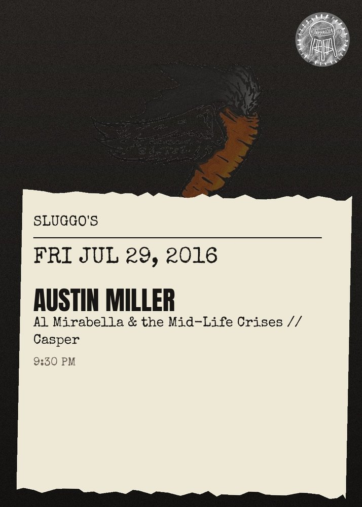

Austin Miller, Al Mirabella & The Mid-life Crises, Casper
From the first jangled notes ringing out from his acoustic guitar, you can tell that Austin Miller is a craftsman.\n\nThe Orlando native\u2019s warm folk-rock evokes an image of a bright-eyed, flannel-clad, bearded Brooklynite. And Miller\u2019s appearance doesn\u2019t disappoint (indeed, his beard is something to behold!).\n\nBut unlike his contemporaries from more hip art scenes in Brooklyn or Oakland, there\u2019s nothing pretentious in his music; you get the sense that he\u2019s not doing it to be cool, he\u2019s doing it for himself. As a result, his music contains an honesty that is often imitated, but impossible to fake. He sings and plays like a man deeply invested in his craft, an artist for other artists and casual listeners alike.\n....\nTaken as a whole, Miller\u2019s music sounds like changing seasons across a variety of American landscapes\u2013from cold, drizzly November nights in the city, to the lonely, open roads through Midwestern prairielands, to a backyard show on a warm summer night. \n(Selections from Moose Dribble's Mike Vangel on Austin Miller)\nhttps:\/\/moosedribble.com\/2014\/10\/10\/austin-miller-splashes-into-the-pool\/\n\nAustin Miller (Folk)\nhttps:\/\/austinmiller.bandcamp.com\/album\/engine\n\nAl Mirabella & the Mid-Life Crises (Folk punk turned rock n' roll)\nhttp:\/\/al-mirabella.bandcamp.com\/\n\nCasper (Full band)\nhttps:\/\/kideternity.bandcamp.com\/album\/night-moves